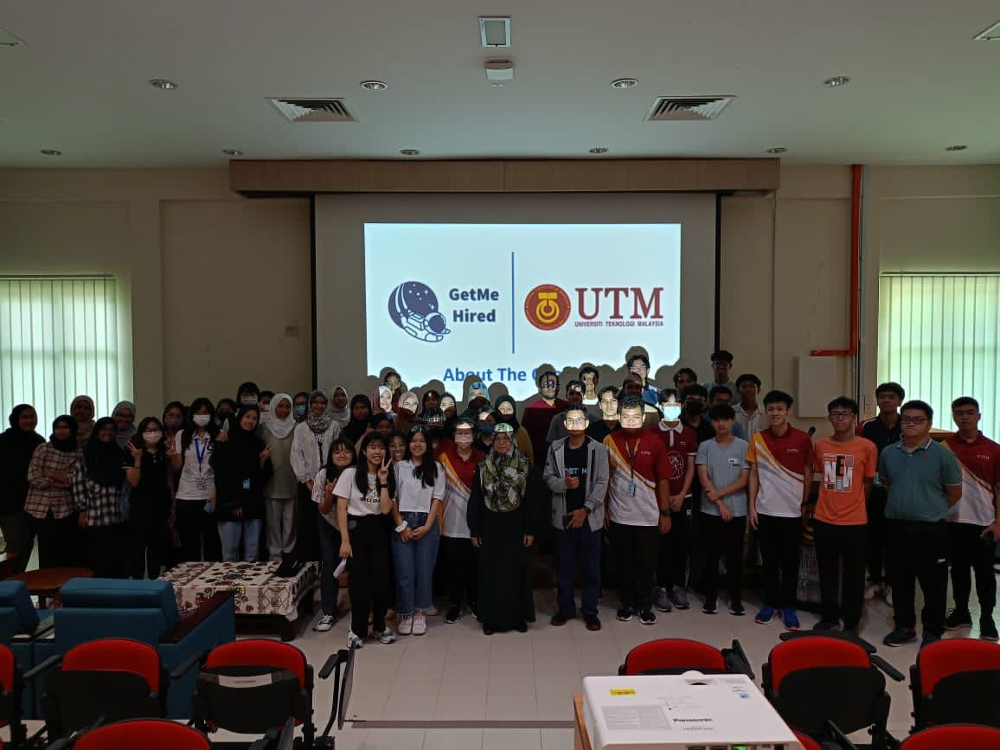
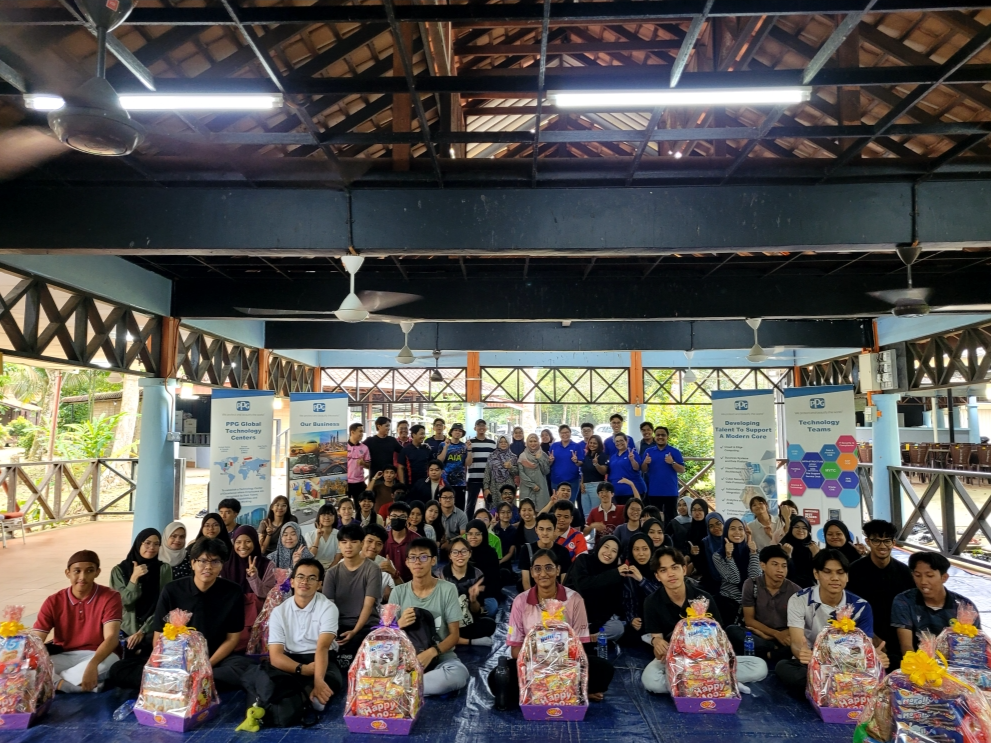
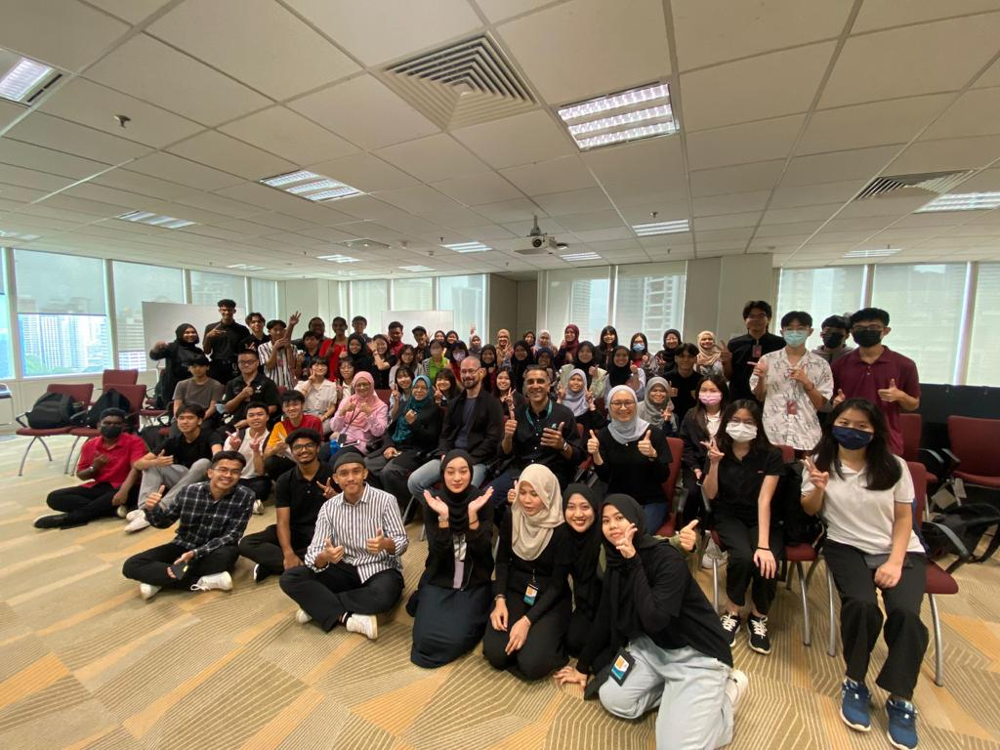
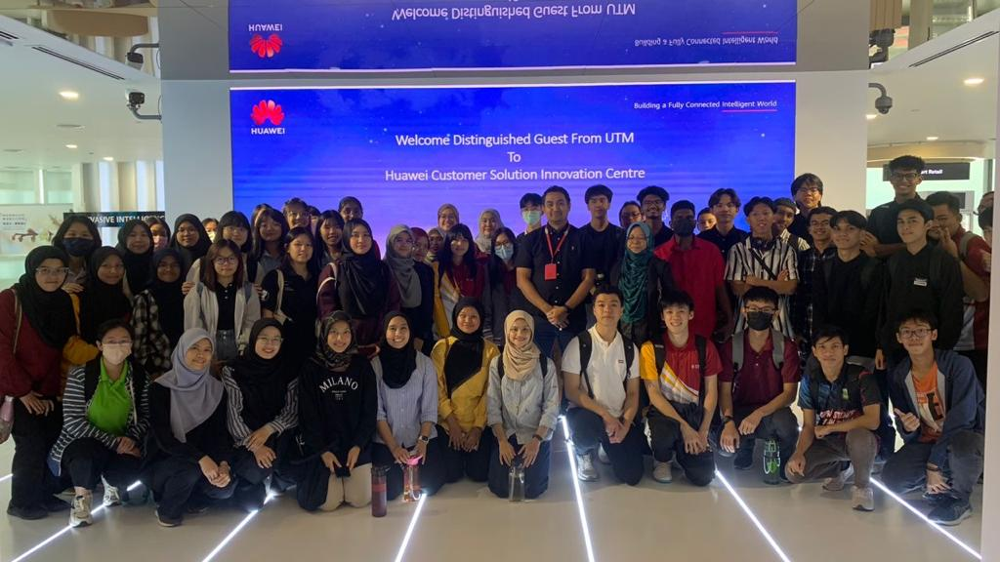

Technology & Information Systems

Course Content
- Chapter 1: Emerging Technology In ICT
- Chapter 2: Hardware
- Chapter 3: Software
- Chapter 4: Information System and System Analysis Design
- Chapter 5: Databases and Data Analysis
- Chapter 6: Networks and Communications
- Chapter 7: Privacy, Security and Ethics
- Chapter 8: Cloud Computing
Industry Talk and Visit
Assignment 1
This assignment is based on the industry talk from Encik Habib and PPG.
 - 23rd October: Industry Talk on Career Development (left picture)
- 28th October: Industry Talk from PPG (right picture)
- Assignment 1:
Reflection
Crafting this poster, I got the opportunity to express my creativity and share my message with others. I found posters are a powerful tool for communication, allowing me to convey important information that I got in these talks in a visually appealing way. As I worked on this poster, I also considered the audience I was targeting and the message I wanted to convey.
Assignment 2
This assignment is based on the industry visit to Petronas and Huawei.
 - 17th November: Industry visit to Petronas and Huawei
- Assignment 2:
Reflection
Creating a newsletter is both enjoyable and challenging for me. I had the opportunity to discuss the design and choose the colors with my team members. This assignment has taught me the importance of sharing our opinions and the content we gathered during the visit to Petronas and Huawei to produce a compact and informative newsletter.
Assignment 3
This assignment is based on the UTM virtual industry talk and industry visit to UTM Digital.

- 5th December: Virtual industry talk by UTM Digital
- 13th December: Industry visit to UTM Digital
- Assignment 3:
Reflection
Filming this video has improved my technical skills such as setting up camera and writing a script. It also helps my communication skills by talking in front of the camera clearly and concisely. Through the process of making this video, I have learned how to effectively convey my message and engage with my audience. Additionally, I have gained confidence in myself and my abilities.
Assignment 4
This assignment is based on the virtual industry talk about system development.

- 28th December: Virtual industry talk about System Development@Credence
- Assignment 4:
Reflection
Writing this report has been an opportunity for me to organize and share my thoughts. It allowed me to understand and summarize the content of the talk. This process not only strengthened my analytical skills but also provided a platform to communicate my opinions and perspective in a clear and structured manner.
PC Assemble
- 22 November 2023 : Disassembling and assembling a PC

Reflection
From this hands-on experience with disassembling and assembling a PC, it allows me to understand the function of each component and how they all work together to create a fully functional machine. This practical exercise provides a better understanding of the hardware concepts from chapter one because I could touch and see everything in action.
Design Thinking
- Get to know our product, WATCH.COM
- Video:
- Report:
- Presentation Slide:
Reflection
The design thinking assignment showed me that the importance of teamwork and project management. When we came up with ideas and solutions, it was interesting how everyone in the team had different thoughts. I also learn that effective communication is critical when working in a team. By talking and sharing ideas have made our product more creative and innovative.